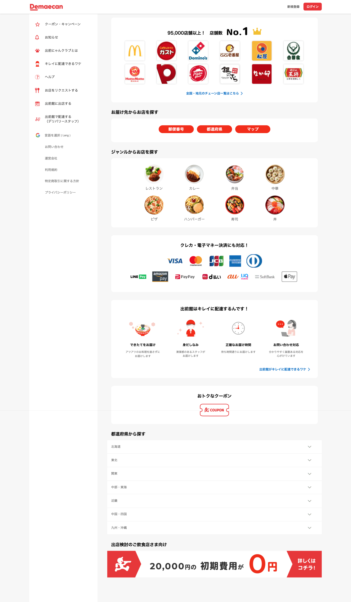
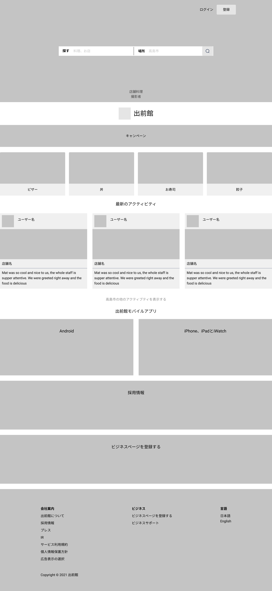

Demae-can Web
UI/UX Design
Overview
Demae-can 出前館, in Japanese meaning "Delivered-to-You Pavillion", is a food delivery business in Japan. Due to market escalation during corona virus, the company expands the design team. I was asked to redesign the website in visitor mode for
the job interview.
Original Webpage

Redesign

Goal
Improve UX and increase new user registration
User
Customer, restaurant owner & job seeker
Process
- I adapted Yelp's use of user-produced photo banner to increase credibility.
- I replaced the round food genre image with rectangluar banner for readibility.
- I used responsive grid to build consistency.
Outcome
- The design was well received by the team.
- One of the question asked was to let me define what is good design, and I said that yelp's uphold of user-produced photos was more credible than professional photos in this context; therefore, that could be called good design in my opinion.
Figma File